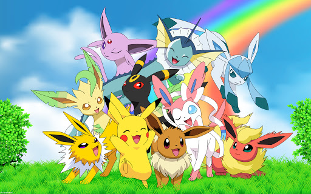
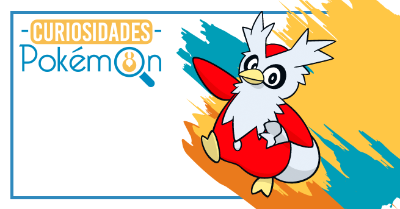

PokeWiki
Bienvenido a PokeWiki, esta es una enciclopedia digital dedicada al universo Pokémon, creada con el propósito de reunir, organizar y compartir de manera clara y accesible toda la información relacionada con este vasto mundo. En ella, los usuarios pueden explorar datos sobre especies Pokémon, regiones, entrenadores, objetos, movimientos y eventos que han marcado la historia de la franquicia.
Ranking Pokémon mas famosos
Aunque existen más de 1,000 especies de Pokémon, algunos se han destacado por su carisma, poder, diseño o papel en la historia de la saga, convirtiéndose en auténticos íconos culturales. En esta lista, exploraremos a los Pokémon más famosos:
- Pikachu (El más famoso por ser el ícono de la franquicia y compañero de Ash en la serie).
- Charizard (Famoso por su apariencia y su poder en batalla).
- Mewtwo (Es conocido por ser uno de los Pokémon legendarios más poderosos y por ser el antagonista en la primera película).
- Eeve (Famoso por sus multiples evoluciones y su diseño tierno).
- Gengar (Uno de los Pokémon más emblemáticos del tipo fantasma introducido en la primera generación).
- Lucario (Conocido por su diseño y su papel en el anime, es un favorito de generaciones más recientes).
Curiosidades
Aquí encontrarás las mejores curiosidades sobre Pokémon:
- El número 000 en la Pokédex pertenece a MissingNo, un famoso error del juego original.
- Hasta la fecha, existen más de 1,000 especies de Pokémon registradas oficialmente.
- Pikachu no iba a ser la mascota oficial de Pokémon. En los primeros diseños, el elegido era Clefairy.
- El primer Pokémon diseñado no fue Bulbasaur, sino Rhydon.
- Cubone lleva el cráneo de su madre fallecida; uno de los detalles más oscuros del universo Pokémon.
- En la primera generación existían solo 15 tipos de Pokémon (ahora hay 19).
- El Pokémon más alto conocido es Eternatus (20 metros de altura).
- El más pequeño es Flabébé, que mide solo 10 centímetros.
- El único Pokémon capaz de usar todos los movimientos es Smeargle, gracias a su técnica “Esquema”.
- Un episodio de Pokémon fue censurado tras provocar que 685 niños en Japón sufrieran convulsiones por destellos de luz, y nunca volvió a emitirse.